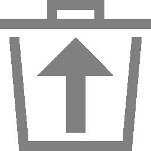

The main interface of the appliance is the web interface, also called Greenbone Security Assistant (GSA).
The web interface can be accessed as follows:
Open the web browser.
Enter the IP address of the appliance’s web interface.
Tip
The web interface’s IP address is displayed in the console login prompt (see Chapter 6.1.2.2.1) or in the GOS administration menu when selecting About and pressing Enter.
Log in with the web administrator account created during the setup (see Chapter 4).
Many pages of the web interface contain dashboards at the top of the page.
These dashboards consist of individually compiled and organized charts and tables.
The charts and tables available depend on the page content.
For each page, there is a default setting of charts and/or tables.
The default setting can be restored by clicking on the right side above the dashboard.
On the Dashboards page, dashboard displays can be grouped and arranged.
Displays can be put together individually, but there are also predefined dashboards that can be selected.
There can be up to 10 dashboards.
By default, there is only the Overview dashboard, which provides a brief outline of tasks, CVEs and VTs (see Fig. 7.4).
The filter bar in the upper right corner (see Fig. 7.9) offers the following options:
The filter expression that should be applied to the currently open page can be entered directly in the input box.
The specific syntax of the filter must be used (see Chapter 7.3.3).
Update the filter with the current input.
Remove the currently applied filter.
Reset the filter expressions to the default settings.
Open the corresponding chapter of the user manual.
Modify the filter that should be applied to the currently open page (see below).
A saved filter can be applied by selecting it from the drop-down list.
127.0.0.1 shows any resource that has “127.0.0.1” anywhere in the text of any column.
127.0.0.1iana shows any resource that has “127.0.0.1” or “iana” anywhere in the text of any column.
127.0.0.1andiana shows any resource that has “127.0.0.1” and “iana” anywhere in the text of any column.
=127.0.0.1 shows any resource that has “127.0.0.1” as the exact name in any column.
notip:192.168.100.[0-9]{1,3} shows any resource with an IP address that does not start with “192.168.100.”, followed by one, two or three numbers between 0 and 9.
regexp192.168.[0-9]+.[0-9] shows any resource that has an IP style string starting with “192.168” anywhere in the text of any column.
name=localhost shows any resource with the exact name “localhost”.
name~local shows any resource with “local” anywhere in the name.
name:^local shows any resource with a name starting with “local”.
port_list~tcp shows any resource that has “tcp” anywhere in the port list name.
modified>2023-04-03andmodified<2023-04-05 shows any resource that was modified between 2023-04-03 0:00 and 2023-04-05 0:00.
created>2023-04-03T13h00 shows any resource that was created after 13:00 on 2023-04-03.
rows=20first=1sort=name shows the first 20 resources sorted by the column Name.
created>-7d shows any resource that was created within the past 7 days.
tag="geo:long=52.2788 shows any resource that has a tag named “geo:long” with the value “52.2788”.
tag~geo shows any resource that has a tag with a name containing “geo”.
All existing filters can be displayed by selecting Configuration > Filters in the menu (see Fig. 7.15).
For all filters, the following information is displayed:
Name
Name that was assigned to the filter when it was created.
Term
Filter expressions that form the filter (see Chapter 7.3.3).
Type
Resource type to which the filter can be applied.
For all filters, the following actions are available:
Move the filter to the trashcan.
Edit the filter.
Clone the filter.
Export the filter as an XML file.
Note
By clicking or below the list of filters more than one filter can be moved to the trashcan or exported at a time.
The drop-down list is used to select which filters are moved to the trashcan or exported.
Tags are pieces of information that can be linked to one or multiple resources of the same type.
They can be used for filtering (see Chapters 7.3 and 7.3.3.1).
A tag for a single resource can be created and linked directly to it as follows:
Open the details page of the resource by clicking on the resource’s name and then on .
Click on the tab User Tags.
Click on the right side.
Fill in the input boxes:
Name
The name can be chosen freely.
A descriptive name should be chosen if possible.
This input box is mandatory.
Comment
The optional comment allows specifying further details and background information.
Value
A value can be assigned for a more fine-grained definition.
Example: a tag named department with the value production can be linked to a resource; a tag also named department but with the value sales can be linked to another resource.
Resource Type
Resource type to which the tag should by linked.
This drop-down list is read-only because the tag is created directly for a resource.
Resources
Selection of a specific resource of the selected resource type.
This drop-down list is read-only because the tag is created directly for a resource.
Active
Selection whether the tag should be available for usage or not.
The name can be chosen freely.
A descriptive name should be chosen if possible.
This input box is mandatory.
Comment
The optional comment allows specifying further details and background information.
Value
A value can be assigned for a more fine-grained definition.
Example: a tag named department with the value production can be linked to a resource; a tag also named department but with the value sales can be linked to another resource.
Resource Type
Resource type to which the tag should by linked.
Resources
Selection of a specific resource of the selected resource type.
Active
Selection whether the tag should be available for usage or not.
All existing tags can be displayed by selecting Configuration > Tags in the menu.
For all tags, the following information is displayed:
Name
Name that was assigned to the tag when it was created.
Value
Value that was defined for the tag when it was created.
Active
Indication whether the tag is available for usage or not.
Resource Type
Resource type to which the tag can by linked.
Number of Resources
Number of resources the tag is currently linked to.
Modified
Date and time the tag was last modified.
For all tags, the following actions are available:
Disable the tag if it is active.
Enable the tag if it is not active.
Move the tag to the trashcan.
Edit the tag.
Clone the tag.
Export the tag as an XML file.
Note
By clicking or below the list of tags more than one tag can be moved to the trashcan or exported at a time.
The drop-down list is used to select which tags are moved to the trashcan or exported.
Details Page
Click on the name of a tag to display the details of the tag.
Click to open the details page of the tag.
The following tabs are available:
Information
General information about the tag, including value, resource type and whether it is active or not.
Assigned Items
Resources to which the tag is currently linked.
The resources are only displayed if the tag is active.
The Trashcan page is opened by selecting Administration > Trashcan in the menu.
It lists all resources currently in the trashcan, grouped by resource type.
Note
Resources in the trashcan are not yet considered deleted.
They are only finally deleted when they are manually deleted from the trashcan, or when the entire trashcan is emptied.
The Content table shows all possible types resources in the trashcan, together with the respective number of each type currently in the trashcan (see Fig. 7.19).
The whole trashcan can be emptied by clicking Empty Trash.
By clicking on a resource type, the corresponding section is displayed.
The single resources can be managed there (see Fig. 7.20):
Clicking  moves the resource out of the trashcan and back to its regular page. The resource cannot be restored if it depends on another resource in the trashcan.
Clicking removes the resource entirely from the system. The resource cannot be deleted if another resource in the trashcan depends on it.
The synchronization status of all SecInfo can be displayed by selecting Administration > Feed Status in the menu.
The following information is displayed (see Fig. 7.21):
Type
Feed type (NVT, SCAP, CERT or GVMD_DATA).
Content
Type of information provided by the feed.
Origin
Name of the feed service that is used to synchronize the SecInfo.
Version
Version number of the feed data.
Status
Status information of the feed, for example time since the last update.
If a feed update is currently being performed, Update in progress… is displayed.
This status is displayed for all feeds, even if only one feed is currently being updated.
Selection of the time zone used to display information.
The appliance saves all information in the time zone UTC±00:00 internally.
To display the data in the user’s time zone, the corresponding selection is required.
Password
The user password can be changed here.
User Interface Language
Language of the web interface.
Per default, the browser setting is used.
Rows Per Page
Default number of resources shown per list page on the web interface.
A high number of rows per page increases loading times.
Custom filters may override this setting (see Chapter 7.3).
Details Export File Name
Default file name of exported resource details.
For the file name, the following placeholders can be used:
%C: the creation date in the format YYYYMMDD.
Changed to the current date if a creation date is not available.
%c: the creation time in the format HHMMSS.
Changed to the current time if a creation time is not available.
%D: the current date in the format YYYYMMDD.
%F: the name of the used report format (XML for lists and types other than reports).
%M: the modification date in the format YYYYMMDD.
Changed to the creation date or to the current date if a modification date is not available.
%m: the modification time in the format HHMMSS.
Changed to the creation time or to the current time if a modification time is not available.
%N: the name for the resource or the associated task for reports.
Lists and types without a name will use the type (see %T).
%T: the resource type, for example “task”, “port_list”. Pluralized for list pages.
%t: the current time in the format HHMMSS.
%U: the unique ID of the resource or “list” for lists of multiple resources.
%u: the name of the currently logged in user.
%%: the percent sign (%).
List Export File Name
Default file name for exported resource lists.
The same placeholders as for Details Export File Name can be used (see above).
Report Export File Name
Default file name for exported reports.
The same placeholders as for Details Export File Name can be used (see above).
Auto Cache Rebuild
Enable or disable the automatic cache rebuild.
If many actions are performed in a row (for example deleting multiple resources) and automatic cache rebuild is enabled, each action triggers the cache rebuild, which slows down the process.
For such cases, the automatic cache rebuild can be disabled temporarily.
Category Severity
Dynamic Severity
Selection of whether the severity of an existing result is changed if the severity of the underlying VT changes.
Otherwise, the new severity only affects future scans.
Default Severity
Specification of the default severity.
It is used if no severity is assigned to a VT.
Category Defaults
Default selections or entries for various settings.
Category Filters
Selection of specific default filters for each page.
The filters are applied automatically when the page is loaded.
Logging out of the web interface can be done by moving the cursor over in the upper right corner and clicking Log Out (see Fig. 7.24).
If no action is performed on the web interface for a defined period of time, the user is logged out automatically (see Chapter 6.2.4.1.1).
The default timeout is 15 minutes.
The remaining time until the user is automatically logged out can be displayed by moving the cursor over .
By clicking the timeout can be reset.
{kind=link}
{kind=link}
{kind=link}
{kind=link}
{kind=link}
{kind=link}
{kind=link}
{kind=link}
{kind=link}
{kind=link}
{kind=link}
 in the tabs above the dashboard (see Fig. 7.5).
in the tabs above the dashboard (see Fig. 7.5).{kind=link}
{kind=link}
{kind=link}
{kind=link}
 in the dashboard tab (see Fig. 7.8).
in the dashboard tab (see Fig. 7.8). Open the corresponding chapter of the user manual.
Open the corresponding chapter of the user manual. Modify the filter that should be applied to the currently open page (see below).
Modify the filter that should be applied to the currently open page (see below).{kind=link}
{kind=link}
{kind=link}
{kind=link}
{kind=link}
{kind=link}
 Move the filter to the trashcan.
Move the filter to the trashcan. Clone the filter.
Clone the filter. Export the filter as an XML file.
Export the filter as an XML file.{kind=link}
 to open the details page of the filter.
to open the details page of the filter. Show the list page of all filters.
Show the list page of all filters.{kind=link}
{kind=link}
{kind=link}
{kind=link}
{kind=link}
{kind=link}
{kind=link}
{kind=link}
{kind=link}
{kind=link}
{kind=link}
{kind=link}
{kind=link}
{kind=link}
{kind=link}
{kind=link}